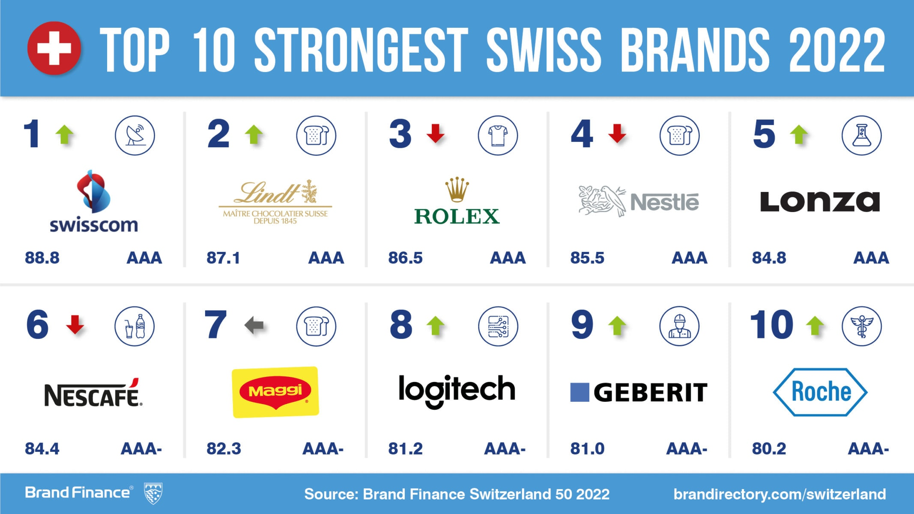
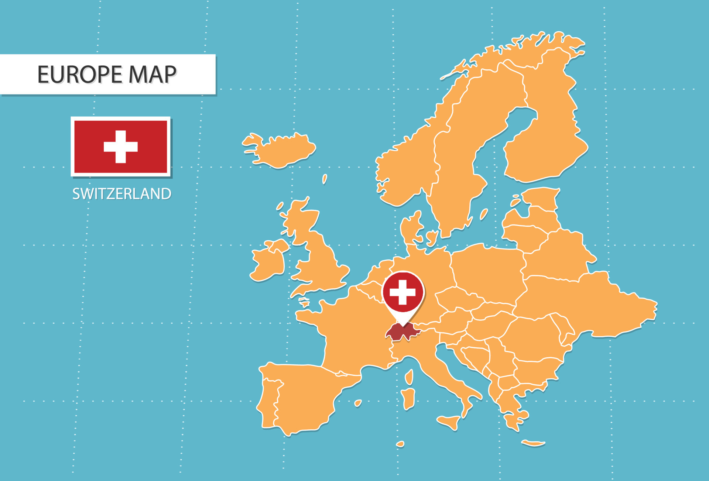
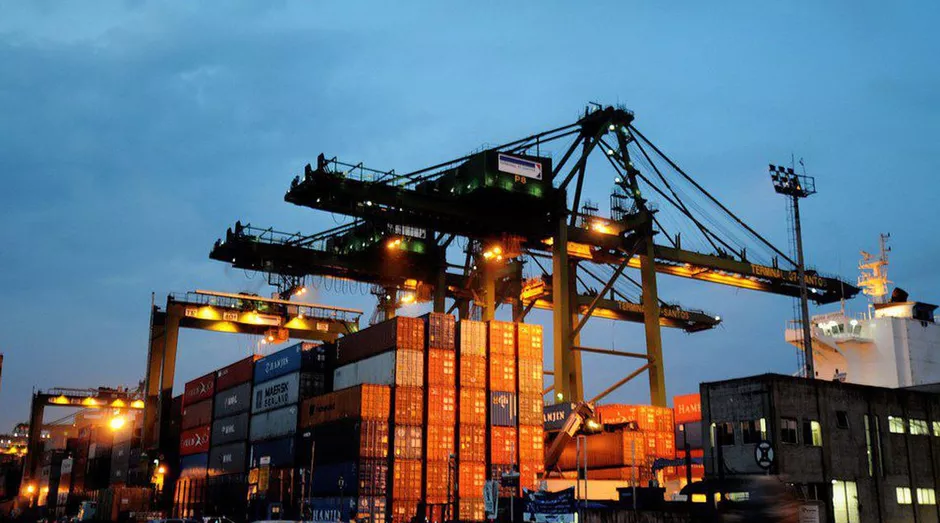
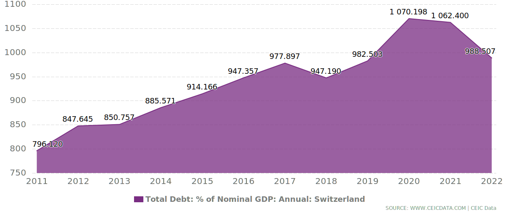

Economia na Suiça
- A economia suíça é uma das mais competitivas do mundo, principalmente graças ao setor de serviços.
Comparando ao nível internacional, a dívida pública suíça é relativamente baixa. Além disso, a Suíça dispõe de um sistema tributário competitivo.
Composta principalmente por pequenas e médias empresas, a economia suíça é baseada na exportação.
A redução das despesas, o assim chamado «freio do endividamento» permitiu atingir um nível relativamente baixo de dívida pública (mesmo após as medidas relativas à Covid 19).
O regime fiscal federal permite que as pessoas jurídicas se beneficiem de uma carga tributária relativamente baixa, o que torna a Suíça um país atraente para empresas.
Outras vantagens competitivas fundamentais incluem uma mão-de-obra com boa formação , um elevado nível de inovação,
estabilidade política, condições de vida atrativas e a localização central na Europa. Como resultado, muitas empresas multinacionais se instalaram na Suíça.
Contudo, a economia suíça é constituída principalmente por pequenas e médias empresas, conhecidas como PME. Muitas delas são orientadas à exportação,
o que explica por que a Suíça encerra regularmente suas contas públicas com um superávit comercial.
Em termos de PIB por habitante, a Suíça é um dos primeiros países do mundo. A sua força econômica baseia-se principalmente no setor de serviços.
A União Europeia é o principal parceiro comercial.
Com o seu produto interno bruto (PIB) por habitante, a Suíça encontra-se no segundo lugar a nível mundial. (Em 2020, de acordo com as estatísticas do FMI,
o valor era de 86.850 dólares norte-americanos).
Cerca de 74% do PIB da Suíça corresponde ao setor dos serviços. A indústria representa cerca de 25%, enquanto a agricultura contribui com menos de 1%.
A União Europeia é o parceiro comercial mais importante da Suíça. Cerca de 66% das importações provém da UE; 48% das exportações destina-se a países da UE.
A grande maioria das empresas suíças (mais de 99%) são empresas de pequeno e médio porte (PMP) com menos de 250 funcionários.

EMPRESAS
As pequenas e médias empresas são, em certa medida, a espinha dorsal da economia suíça. No entanto, um elevado número de empresas multinacionais
também se estabeleceu na Suíça. Elas contribuem desproporcionalmente para o PIB, especialmente as grandes empresas farmacêuticas.
A economia suíça baseia-se em grande parte nas pequenas e médias empresas (PME), com menos de 250 trabalhadores.
Quase 99% de todas as empresas da Suíça são empresas PMP, com cerca de dois terços do total dos postos de trabalho. Muitas dessas empresas são familiares.
A Suíça também é sede de grandes empresas multinacionais. Apesar do pequeno número em comparação com as muitas PME,
estas empresas empregam um grande número de pessoas e contribuem desproporcionalmente para o PIB.
A maior empresa por número de trabalhadores é o grupo de produtos alimentícios Nestlé, com 273’000 funcionários em todo o mundo. Em termos de capitalização nas bolsas,
14 das 500 maiores empresas globais estão localizadas na Suíça. Elas atuam na área farmacêutica (Novartis, Roche),
financeira (UBS, Credit Suisse, Zürich, SwissRe), comércio de matérias-primas (Glencore) ou de produtos alimentícios (Nestlé, Migros, Coop).
Mas também a Holcim, a Adecco e a ABB aparecem nesta lista. Evidentemente, muitos gestores destas empresas multinacionais são estrangeiros,
trazendo know-how internacional.


PESQUISA E DESENVOLVIMENTO
Anualmente, a Suíça gasta quase 23 bilhões de francos suíços em pesquisa e desenvolvimento,
o que a torna um dos países com o maior investimento neste setor. Dois terços dos gastos em pesquisa e desenvolvimento são efetuados por empresas privadas.
Por ano, a Suíça investe quase 23 bilhões de francos em pesquisa e desenvolvimento (P&D), o que representa 3,15% do produto interno bruto.
Numa comparação a nível internacional, a Suíça ocupa o sétimo lugar.
As universidades e as duas faculdades técnicas federais dedicam-se principalmente à pesquisa fundamental.
As faculdades de ciências aplicadas e empresas privadas, no entanto, se dedicam à pesquisa aplicada e às demandas da economia.
Na área da pesquisa e do desenvolvimento, as empresas privadas desempenham um papel essencial na Suíça.
Em 2019, elas investiram nessa área 15,5 bilhões de francos (2,1% do PIB).
Três quartos deste montante cabem aos setores com despesas de pesquisa tradicionalmente significativas: indústria química e farmacêutica (36,7%), metalurgia (13,7%),
laboratórios de pesquisa (13%) e novas tecnologias (11,3%).
EXPORTAÇÕES
Pobre em matérias-primas, mas rica em mão de obra altamente qualificada,
a Suíça mantém relações comerciais intensas com países estrangeiros. A UE é o parceiro comercial mais importante, especialmente a Alemanha.
A economia suíça depende fortemente do comércio internacional. Em 2020, o total de exportações (de bens e serviços)
atingiu os 442 bilhões de francos suíços. Em contrapartida, o total das importações foi de 377 bilhões de francos suíços.
A Suíça atinge regularmente um saldo positivo na balança comercial.
Exportações (em 2021): US$ 380 bilhões
Importações (em 2021): US$ 320 bilhões
Comércio com mercadorias
Em 2020, de acordo com as estatísticas aduaneiras, a economia suíça forneceu 225 bilhões de francos suíços ao exterior (excluindo o comércio em trânsito). Quase metade deste montante diz respeito às exportações aos países da UE. O parceiro comercial mais importante da Suíça é a Alemanha, recebendo cerca de 18% dos bens exportados. Os produtos de exportação mais importantes da Suíça são produtos da indústria química e farmacêutica (52%), de máquinas (13%), relógios (8%) e instrumentos de precisão (7%). Dos bens importados (182 bilhões de francos suíços em 2020), cerca de dois terços provieram de países da UE. Só a Alemanha forneceu mais de 27% das mercadorias importadas. As indústrias química e farmacêutica, bem como a de máquinas, eletrônica e de veículos representam a maior parte dos bens importados.
matérias-primas
Além disso, o comércio de matérias-primas (café, algodão, petróleo, minério de ferro, alumínio, ouro, cobre, etc.) tem crescido em importância. A Suíça se tornou um dos países mais importantes do mundo no comércio de matérias-primas. A participação em metais preciosos e joias já ultrapassou a marca de 20%, tanto nas exportações como nas importações.



Dados sobre a economia do país
Abaixo estam apresentadas algumas informações sobre a Suiça e a economia recorrente nela.
U$767,05 bilhões
PIB (2022)US$ 86.849,47
PIB per capita (2023)0.7 %
Taxa de crescimento do PIB em 2023-0320º lugar
Posição no ranking econômico mundial (2022)REGIME FISCAL
As cargas fiscais das pessoas físicas e jurídicas na Suíça são das mais baixas em toda a Europa. Os impostos diretos sobre as pessoas físicas são determinados anualmente via auto declaração e pagos em prestações no ano seguinte. O sistema tributário da Suíça também reflete a estrutura federal do país. As empresas e pessoas físicas estão sujeitas a impostos em todos os três níveis (confederação, cantão e comuna). Cerca de 30% das receitas fiscais fluem para o caixa da confederação, 40% para os caixas dos cantões e os restantes 30% são recebidos pelas comunas.
Impostos diretos
Os impostos diretos são pagos por pessoas físicas e jurídicas. Representam cerca de 70% do rendimento fiscal total e são compostos por impostos sobre rendimentos com taxas de impostos progressivas, impostos sobre os lucros de empresas, cujas taxas variam entre 11,7 e 21,6%, e impostos sobre o patrimônio de pessoas físicas, para os quais se aplicam também taxas progressivas na maioria dos cantões. A confederação não cobra impostos sobre as sucessões, mas a maioria dos cantões sim. O imposto de renda retido na fonte com uma taxa de 35% é uma retenção na fonte cobrada pela confederação sobre os juros bancários ou ganhos em loterias. É reembolsado totalmente ao contribuinte quando este declara os respectivos rendimentos e valores patrimoniais na sua declaração de imposto.
Impostos indiretos
Os impostos indiretos contribuem com cerca de 30% para as receitas fiscais na Suíça. O imposto indireto mais importante é o imposto sobre o valor agregado (IVA), cobrado pela confederação. Atualmente, a taxa de imposto é de 7,7% do faturamento, a taxa de imposto sobre o valor agregado mais baixa na Europa. Uma taxa reduzida de 3,7% é válida para serviços da indústria hoteleira e uma taxa de 2,5% é aplicada a bens de primeira necessidade. Os serviços médicos e de educação estão isentos de impostos sobre o valor agregado.
FINANÇAS PÚBLICAS
Evolução do endividamento
No decorrer dos anos 90, a dívida pública aumentou intensamente – de 30,9% do produto interno bruto (PIB) em 1990 para 52,8% no final de 2004. Como consequência de um freio nas despesas, introduzido pela confederação em 2003, a quota da dívida pública diminuiu novamente. Em 2014, a dívida ainda era de 34,7% do PIB. Desde 2006, as contas consolidadas do poder público (confederação, cantões e comunas, bem como previdências sociais) têm sido encerradas, todos os anos, com um superávit ou com ligeiro déficit. Embora a pandemia da Covid 19 também tenha afetado as finanças da Suíça, o déficit das finanças públicas de 2020 continua reduzido no comparativo internacional, com 2,6% do PIB. trazendo know-how internacional.

2023 Todos os Direitos Reservados. ETEC Vasco Antônio Venchiarutti